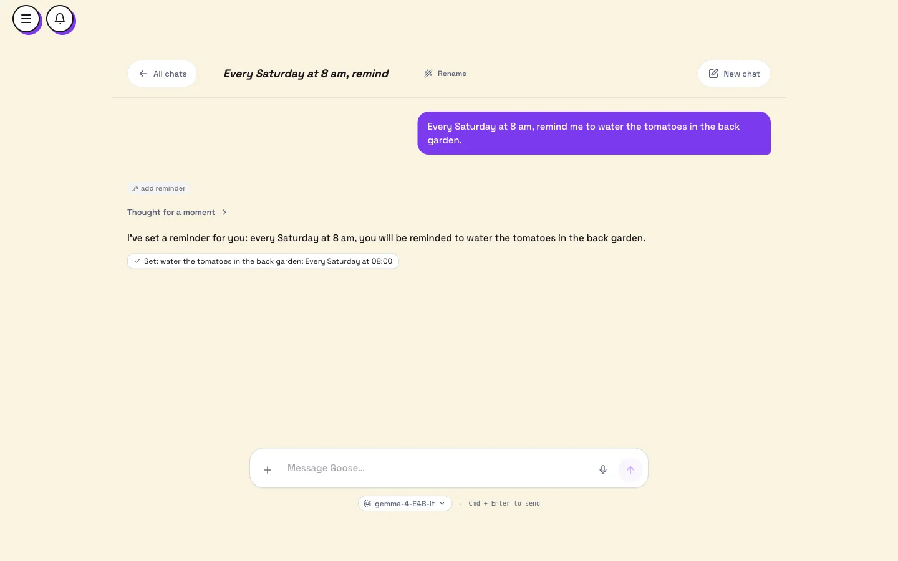
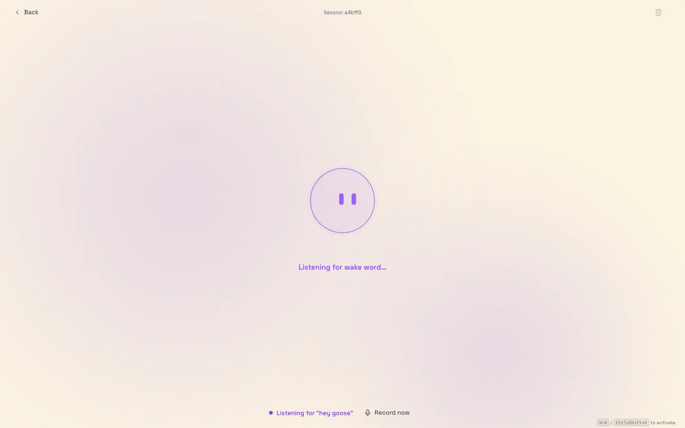
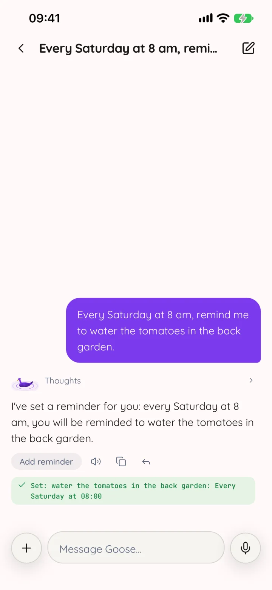
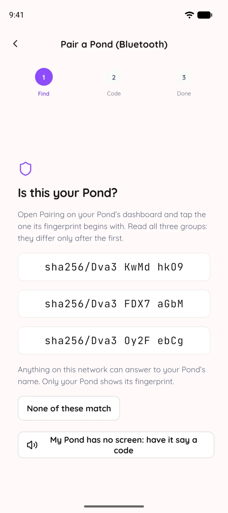
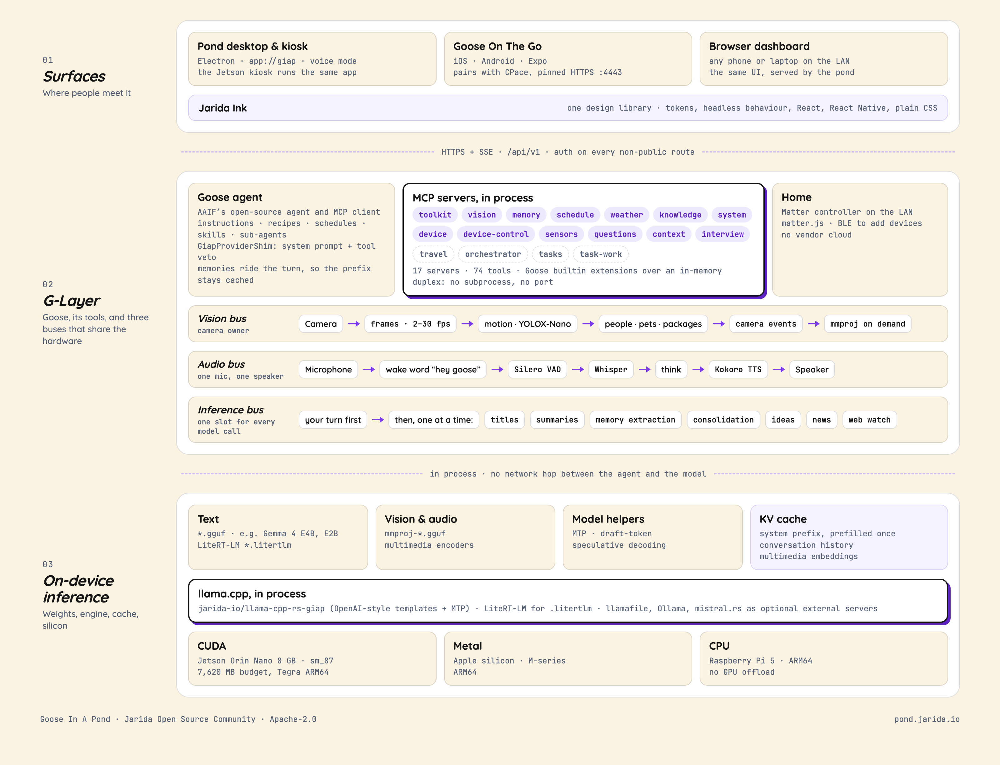

Your voice stays home
Wake word, speech, the model and memory all run on the box. A build test fails if any code makes an HTTP call outside the egress tracker.
Goose In A Pond runs voice, language, memory and device control on a board you can hold. Goose On The Go puts it in your pocket. Nothing leaves the house.
Built on Goose, the open-source agent and MCP client. Apache-2.0.


Wake word, speech, the model and memory all run on the box. A build test fails if any code makes an HTTP call outside the egress tracker.
Switch the pond to Offline and it refuses everything but loopback. The model, voice, memory, schedules, cameras and Matter devices carry on.
Apache-2.0, with 17 MCP servers and 74 tools you can read, fork and add to. No vendor can change the terms on you.
Screens from the current builds of both apps, talking to a pond running Gemma 4 E4B on the device.









The surfaces people use, Goose and its MCP servers in the middle, and llama.cpp underneath, in the same process as the agent.

MCP servers and 74 tools, run as Goose builtin extensions over an in-memory duplex. No subprocess, no port.
The pond’s whole budget on an 8 GB Jetson Orin Nano: model, speech, embedder and camera.
Faster decode on the Orin with a multi-token-prediction drafter, with token-identical output.
Jetson Orin Nano 8 GB · sm_87
Apple silicon · M-series
Raspberry Pi 5 · no GPU offload
Everything that makes the pond, in the open.
The pond: Rust server, desktop app and kiosk, voice stack, and all 17 MCP servers.
jarida-io/goose-on-the-goThe phone app for iOS and Android: pairing, chat, voice, schedules and the home.
jarida-io/ink · npm @jarida/inkThe design library both apps and this page are drawn with: tokens, headless behaviour, React, React Native and plain CSS.
jarida-io/llama-cpp-rs-giapRust bindings for llama.cpp with OpenAI-style chat templates and MTP speculative decoding together.
jarida-io/GooseOur tracked fork of the AAIF agent and MCP client, pinned by the pond as a submodule.
Most “smart” home assistants need a live connection to someone else’s cloud, ship your voice to a data center you’ll never see, and go quiet the moment your internet does. This talk is about what it took for a five-person team to build the alternative on Goose and MCP: how Goose learned to listen for its own name, how it runs the home, and how it gets better over time without ever phoning home.
Liz Wangui · Purity Wanjiru · Emmanuel Oyugi · Africia Kerubo · Jerry Ochieng